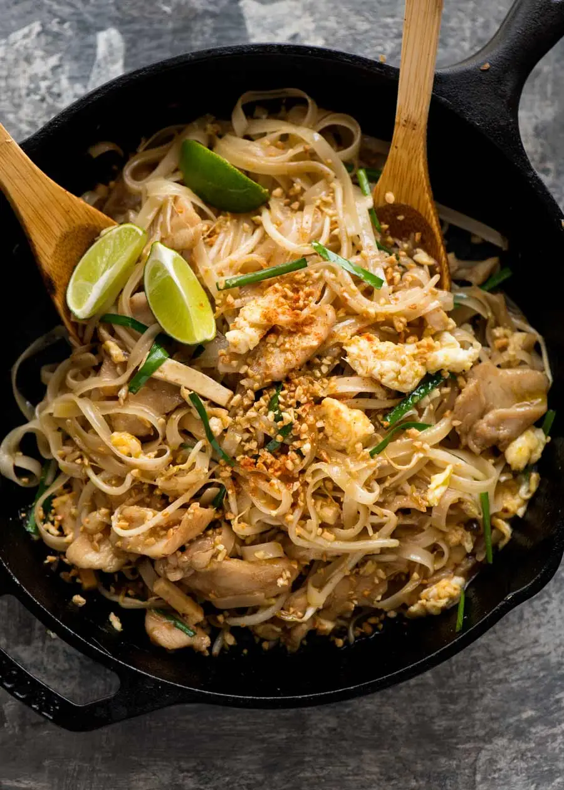

Pad Thai

Pad Thai is one of the first dishes I learned to make that was a food no one had cooked for me at home before.
It was interesting trying different combinations and cooking methods to try and get that restaurant flavor, and I don't think I'm there yet but I've managed to make something that tastes delicious nonetheless.
Ingredients
To make Pad Thai, you'll need the following ingredients:
- 4oz Pad Thai dried rice sticks
- 3 tbsp packed brown sugar
- 1 1/2 tbsp tamarind puree
- 2 tbsp fish sauce
- 1 1/2 tbsp oyster sauce
- 3 tbsp vegetable oil
- 1/2 onion (white or yellow)
- 2 garlic cloves finely chopped
- 6 oz chicken breast sliced
- 2 eggs lightly whisked
- 1 1/2 cup of beansprouts
- 1/4 cup chives or green onion, cut into 1" pieces
- 1/4 cup peanuts finely chopped
Instructions
- Place noodles in a large bowl and pour boiling water. Let soak for 5 minutes, then drain and rinse under cold water.
- Mix the Brown Sugar, Tamarind Puree, Fish Sauce, and Oyster Sauce in a small bowl.
- Heat vegetable oil in a large non-stick pan over high heat. Add garlic and onion to cook for 30 seconds.
- Add chicken and cook for 2 minutes or until mostly done
- Push the contents of the pan to one side, and pour the whisked eggs into the other side. Scramble using a wooden spoon, adding oil if needed, then mix into chicken.
- Add bean sprouts, noodles, and then the sauce mixture.
- Toss gently for two minutes until the sauce is absorbed into the noodles.
- Add the garlic chives and then half of the peanuts. Toss quickly and then remove the pan from the heat.
- Serve immediately, sprinkled with the remaining peanuts. Add a spritz of lime juice, beansprouts, and chili flakes. Enjoy!